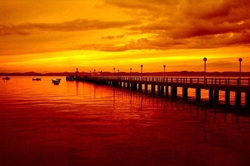

this is my web page natural sceneries
scenery.
Scenery is a word for how a place looks, especially a beautiful, outdoorsy place. Also, scenery is fake background in a play. If you go to a place with mountains, and beautiful trees, and gorgeous skies, then it's got great scenery. Scenery is the stuff you can look at outside.
good evening

big mountains